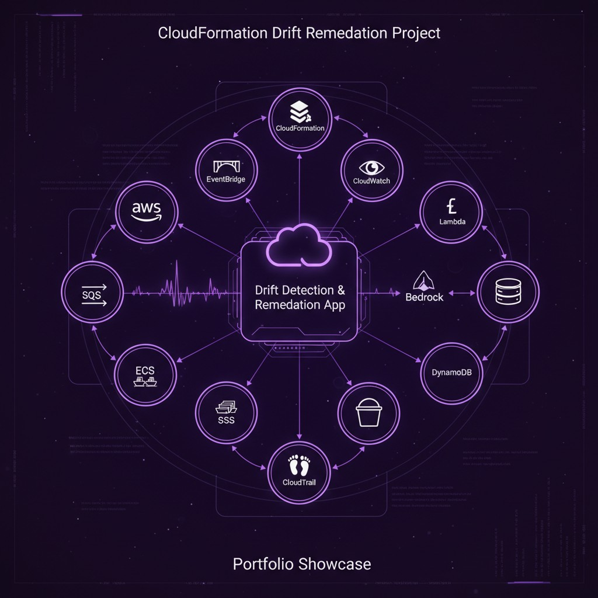

AWS
Terraform
Python
Bedrock
IaC Drift Remediation SaaS
Automatically detects when manual AWS console changes cause infrastructure drift, generates corrected CloudFormation templates using Amazon Bedrock (LLM), and opens GitHub pull requests for engineers to review. Multi-tenant SaaS with EventBridge scheduling, Lambda fan-out, and a self-service customer portal deployed on App Runner.
View on GitHub